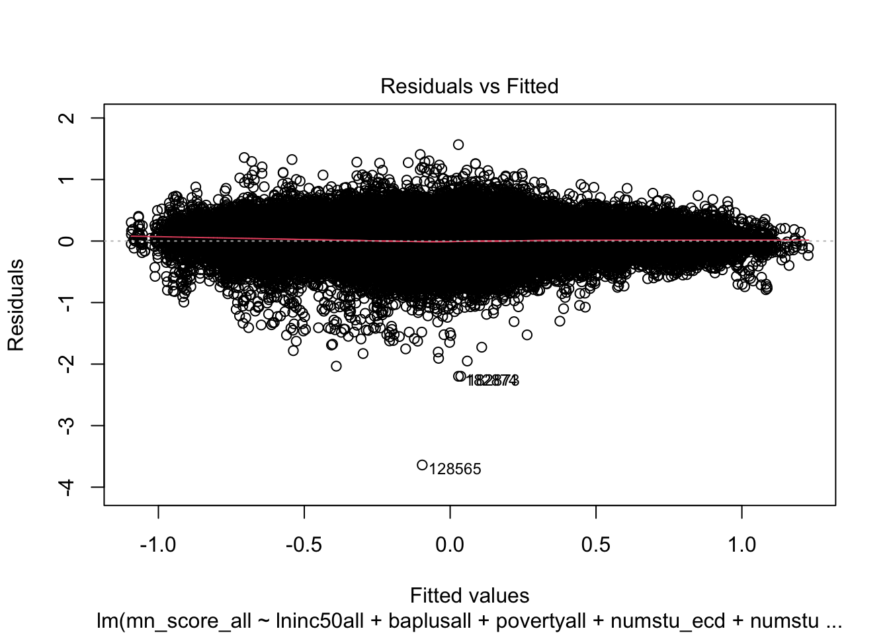

As seen in blog post 3, race was a predictor variable in the scores seen in students. Economic status is another. We want to see how these two variables work together, rather than individually like we did last week.
More Exploration
Our regression model predicts the average test score (mn_score_all) based on subgroup-specific test scores, including those for Asian (mn_score_asn), Black (mn_score_blk), economically challenged (mn_score_ecd), female (mn_score_fem), Hispanic (mn_score_hsp), male (mn_score_male), multiracial (mn_score_mtr), and white (mn_score_wht) students. Each coefficient (β) represents the expected change in the average test score for a one-unit change in the corresponding subgroup’s test score. We anticipate identifying significant associations between subgroup-specific performance and the overall average test score. Our model’s goodness of fit will be evaluated using metrics such as R-squared and the F-statistic’s significance, while residual plots will ensure adherence to model assumptions.
Linear regression model
library(tidyverse)
── Attaching core tidyverse packages ──────────────────────── tidyverse 2.0.0 ──
✔ dplyr 1.1.3 ✔ readr 2.1.4
✔ forcats 1.0.0 ✔ stringr 1.5.0
✔ ggplot2 3.4.3 ✔ tibble 3.2.1
✔ lubridate 1.9.2 ✔ tidyr 1.3.0
✔ purrr 1.0.2
── Conflicts ────────────────────────────────────────── tidyverse_conflicts() ──
✖ dplyr::filter() masks stats::filter()
✖ dplyr::lag() masks stats::lag()
ℹ Use the conflicted package (<http://conflicted.r-lib.org/>) to force all conflicts to become errors
The summary output of the regression model demonstrates an exceptional fit to the data, with a remarkably low residual standard error of 0.006255, indicating minimal unexplained variability in the dependent variable. The multiple R-squared value of 0.9997 suggests that nearly all of the variance in the dependent variable is accounted for by the independent variables included in the model, while the adjusted R-squared value confirms this finding, adjusting for the number of predictors. The F-statistic is impressively large at 4.84e+06, with an associated p-value of less than 2.2e-16, providing strong evidence of the model’s overall significance. However, it’s noteworthy that not all coefficient estimates are statistically significant at the 5% level, suggesting that while the model as a whole is highly significant, individual predictors may not contribute significantly to explaining the variability in the dependent variable. Despite this, the model still offers valuable insights into the relationship between subgroup-specific test scores and overall average test performance.
Residuals and Related Statistics Table:
.rownames
mn_score_all
lninc50all
baplusall
povertyall
numstu_ecd
numstu_male
numstu_fem
perasn
perhsp
perblk
perwht
state_dummies
.fitted
.resid
.hat
.sigma
.cooksd
.std.resid
1
0.1371997
10.97552
0.1799880
0.1002362
11.50000
15.83333
15.83333
0.0048587
0.0087912
0.0128562
0.9734938
0
0
0
0
0
0
0
2
0.0488767
10.97552
0.1799880
0.1002362
11.50000
15.83333
15.83333
0.0048587
0.0087912
0.0128562
0.9734938
0
0
0
0
0
0
0
3
0.1122827
10.88742
0.1677282
0.1015800
12.83333
15.16667
18.00000
0.0042735
0.0115492
0.0248317
0.9593456
0
0
0
0
0
0
0
4
-0.1143257
10.88742
0.1677282
0.1015800
12.66667
15.16667
17.83333
0.0042735
0.0115492
0.0248317
0.9593456
0
0
0
0
0
0
0
5
-0.0378648
10.88924
0.1896547
0.1186809
13.16667
16.66667
19.00000
0.0000000
0.0146428
0.0189163
0.9664410
0
0
0
0
0
0
0
6
-0.2208493
10.88924
0.1896547
0.1186809
13.16667
16.50000
19.16667
0.0000000
0.0146428
0.0189163
0.9664410
0
0
0
0
0
0
0
Residual Plot

The Residuals vs. Fitted plot signals an excellent fit of the regression model to the data. This close alignment indicates minimal discrepancies between predicted and observed values, while the consistent spread of residuals suggests uniform variability across different levels of the independent variables. With no discernible patterns, the model accurately captures underlying relationships without systematic errors, meeting key assumptions of linear regression. However, it’s worth noting the presence of some visible leverage points in the data.
Summary Tables
district year state subject
Length:232778 Min. :2009 Length:232778 Length:232778
Class :character 1st Qu.:2011 Class :character Class :character
Mode :character Median :2013 Mode :character Mode :character
Mean :2013
3rd Qu.:2016
Max. :2018
mn_score_all numstu_all mn_score_asn numstu_asn
Min. :-3.735 Min. : 1.00 Min. :-2.92 Min. : 1.00
1st Qu.:-0.197 1st Qu.: 35.17 1st Qu.: 0.26 1st Qu.: 2.00
Median : 0.030 Median : 92.67 Median : 0.60 Median : 3.83
Mean : 0.025 Mean : 290.29 Mean : 0.59 Mean : 29.22
3rd Qu.: 0.249 3rd Qu.: 237.67 3rd Qu.: 0.93 3rd Qu.: 14.00
Max. : 2.865 Max. :74519.00 Max. : 2.79 Max. :11901.33
NA's :23236 NA's :14 NA's :205143 NA's :120352
mn_score_blk numstu_blk mn_score_ecd numstu_ecd
Min. :-3.40 Min. : 1.00 Min. :-3.55 Min. : 1.0
1st Qu.:-0.63 1st Qu.: 2.25 1st Qu.:-0.42 1st Qu.: 15.0
Median :-0.45 Median : 6.33 Median :-0.24 Median : 38.5
Mean :-0.44 Mean : 75.86 Mean :-0.26 Mean : 157.6
3rd Qu.:-0.25 3rd Qu.: 35.17 3rd Qu.:-0.08 3rd Qu.: 105.2
Max. : 1.16 Max. :21703.67 Max. : 1.24 Max. :61479.3
NA's :180838 NA's :92526 NA's :61961 NA's :5949
mn_score_fem numstu_fem mn_score_hsp numstu_hsp
Min. :-2.33 Min. : 1.00 Min. :-2.36 Min. : 1.00
1st Qu.:-0.13 1st Qu.: 17.50 1st Qu.:-0.47 1st Qu.: 2.67
Median : 0.10 Median : 45.67 Median :-0.28 Median : 7.20
Mean : 0.10 Mean : 142.73 Mean :-0.26 Mean : 87.57
3rd Qu.: 0.33 3rd Qu.: 116.67 3rd Qu.:-0.07 3rd Qu.: 31.00
Max. : 1.99 Max. :36852.67 Max. : 1.29 Max. :38164.75
NA's :51659 NA's :2566 NA's :163843 NA's :45723
mn_score_male numstu_male mn_score_mtr numstu_mtr
Min. :-3.63 Min. : 1.00 Min. :-1.99 Min. : 1.00
1st Qu.:-0.26 1st Qu.: 18.50 1st Qu.:-0.17 1st Qu.: 2.00
Median :-0.03 Median : 47.83 Median : 0.05 Median : 4.00
Mean :-0.03 Mean : 149.32 Mean : 0.08 Mean : 13.03
3rd Qu.: 0.21 3rd Qu.: 122.50 3rd Qu.: 0.30 3rd Qu.: 10.17
Max. : 1.88 Max. :37666.33 Max. : 1.75 Max. :1904.00
NA's :49416 NA's :2009 NA's :208467 NA's :107273
numstu_nec mn_score_wht numstu_wht pernam
Min. : 1.00 Min. :-1.96 Min. : 1.00 Min. :0.000000
1st Qu.: 16.33 1st Qu.:-0.05 1st Qu.: 23.33 1st Qu.:0.000000
Median : 45.67 Median : 0.14 Median : 64.17 Median :0.002276
Mean : 140.02 Mean : 0.15 Mean : 147.44 Mean :0.030590
3rd Qu.: 123.33 3rd Qu.: 0.35 3rd Qu.: 155.83 3rd Qu.:0.007697
Max. :19079.33 Max. : 1.88 Max. :11594.33 Max. :1.000000
NA's :10751 NA's :42400 NA's :3927
perasn perhsp perblk perwht
Min. :0.0000000 Min. :0.00000 Min. :0.000000 Min. :0.0000
1st Qu.:0.0002838 1st Qu.:0.01723 1st Qu.:0.004059 1st Qu.:0.5940
Median :0.0059829 Median :0.04773 Median :0.014154 Median :0.8552
Mean :0.0200438 Mean :0.13654 Mean :0.076034 Mean :0.7368
3rd Qu.:0.0169583 3rd Qu.:0.15032 3rd Qu.:0.052669 3rd Qu.:0.9494
Max. :1.0000000 Max. :1.00000 Max. :1.000000 Max. :1.0000
perfl perecd perell perspeced
Min. :0.001393 Min. :0.002 Min. :0.00000 Min. :0.0000
1st Qu.:0.246167 1st Qu.:0.343 1st Qu.:0.00000 1st Qu.:0.1082
Median :0.386980 Median :0.500 Median :0.00917 Median :0.1356
Mean :0.405481 Mean :0.502 Mean :0.04232 Mean :0.1381
3rd Qu.:0.545425 3rd Qu.:0.654 3rd Qu.:0.04186 3rd Qu.:0.1655
Max. :0.994910 Max. :1.000 Max. :1.00000 Max. :1.2639
NA's :3296 NA's :168 NA's :168
totenrl lninc50all baplusall povertyall
Min. : 0.80 Min. : 9.421 Min. :0.001 Min. :0.000
1st Qu.: 35.50 1st Qu.:10.626 1st Qu.:0.142 1st Qu.:0.087
Median : 93.33 Median :10.802 Median :0.190 Median :0.125
Mean : 293.98 Mean :10.838 Mean :0.228 Mean :0.131
3rd Qu.: 240.33 3rd Qu.:11.012 3rd Qu.:0.272 3rd Qu.:0.165
Max. :74619.83 Max. :12.506 Max. :0.889 Max. :0.483
NA's :6323 NA's :6323 NA's :6323
unempall snapall single_momall
Min. :0.000 Min. :0.000 Min. :0.002
1st Qu.:0.054 1st Qu.:0.057 1st Qu.:0.109
Median :0.070 Median :0.096 Median :0.142
Mean :0.072 Mean :0.105 Mean :0.151
3rd Qu.:0.087 3rd Qu.:0.142 3rd Qu.:0.181
Max. :0.357 Max. :0.524 Max. :0.615
NA's :6323 NA's :6323 NA's :6323